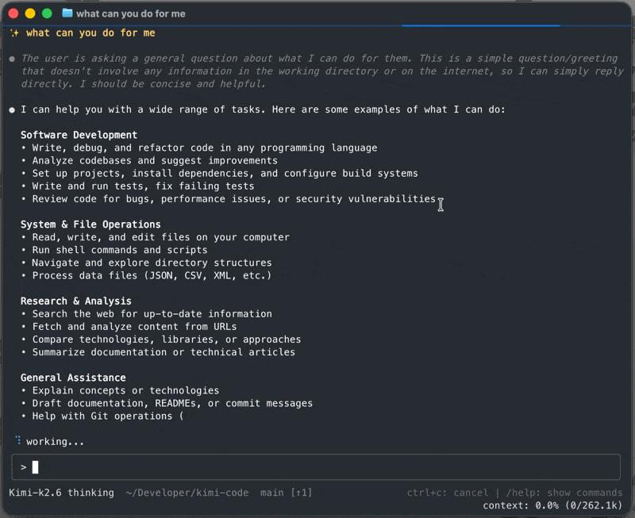

Kimi Code CLI 2.3.2 · 产品更新 · 维护者发行与实现
Kimi Code把分工交回用户，未开群体模式就不启动代理群
2026-10-25T07:59:14Z · 10月25日07:59 UTC发行，早于昨日截止，本期按迟发现补充。

官方仓库所附历史终端演示帧；画面是旧版界面，不是2.3.2新开关的实测。 ↗ 原始图证任务大，不再自动等于多开代理
开发者让Kimi检查一组文件，过去可能看到助手自行启动一批代理，再等待各自交回结果。2.3.2把这个决定提前给用户：普通任务由主代理使用自己的工具完成，只有消息、AGENTS.md、技能或用户已开启的多代理模式明确要求分工，才派生普通子代理。要求认真研究、深入调查或处理多部分任务，本身不再构成分工请求。用户仍可直接说使用explore代理查找相关文件，也可以延续已经授权的子任务，不需要为同一任务重复下令。这是客户端行为更新，和昨日介绍的K3.1 Pro模型能力及长上下文接口是两件事。
代理群开关真正进入执行路径
群体分工使用另一条更明确的边界。用户可用/swarm on开启模式，或用/swarm加任务同时开启并提交工作；后一种用法在该轮正常完成后自动关闭。新实现先在准备执行AgentSwarm时检查状态，再在真正启动前检查一次，因此用户中途关掉模式也会生效。未开启时返回错误，不弹一个审批框让模型顺手继续，更不会启动子代理。系统还不再把旧会话里由工具自动开启群体模式的记录恢复成当前开启状态。历史标记可以留下，但重开会话不会因此自动获得下一轮群体分工的入口。
子代理交回结论，仍需有人收口
普通子代理接收主代理写出的任务说明，在独立上下文里读材料和执行，再把结论交回主代理，用户最后看的是主代理整理后的答复。中间文件与工具记录不会全部挤入主对话，但子代理也看不到主代理已经理解的全部内容，因此交接要重新说明目标、已知事实和范围。维护者把这部分重新获取上下文的时间与词元成本列为调整理由。此次普通Agent工具的改变主要是系统与工具提示，不宜和AgentSwarm的运行时拒绝混为一谈。需要并行时，拆开的任务仍应各有清楚边界，汇总者仍要检查结论是否覆盖原问题。
脚本与编辑器要先核对失去的入口
这次收紧也减少了一部分现有入口的能力。kimi -p打印模式和Zed等ACP客户端没有开启群体模式的入口，因此无法再依赖模型自行启动AgentSwarm。自定义子代理也不能借主代理的开关嵌套启动代理群。交互式终端、网页和桌面端仍可由用户开启；不能把这次CLI发行直接当成所有扩展都同步更新。对原先把批量检查放进脚本的人，这是一项需要迁移判断的行为变化，而非只改一句提示。发行记录给出的是实现与维护者验证，尚无独立数据证明总耗时或账单一定降低。
← 回到项目，继续翻页